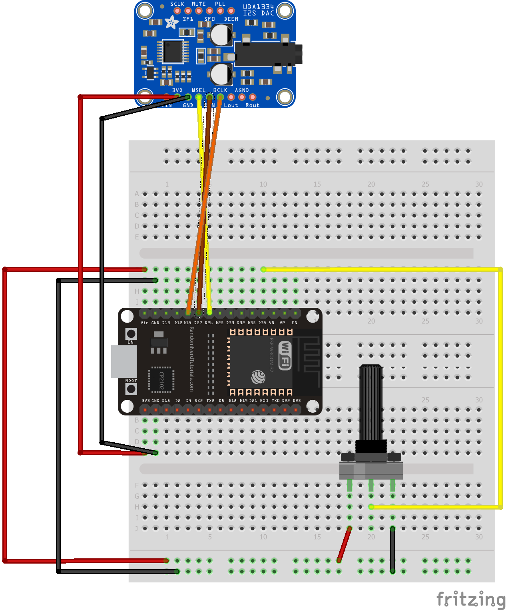
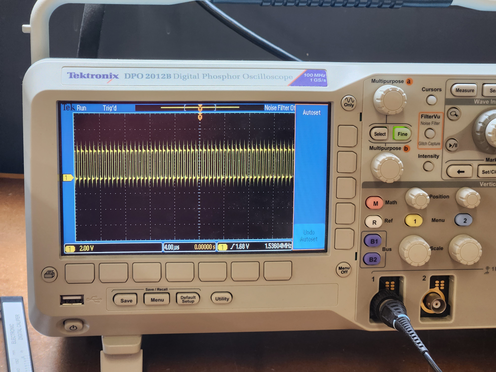

For my output device project, I decided to use a DAC module I had on hand with ESP32's I2S feature and wifi capabilities to make an internet radio with volume control. This device connects to an MP3 radio station online through Wi-Fi (in this case, a Swiss jazz radio statio because why not), decodes it using the Helix MP3 encoder library, send it to I2S using Phil Schatzmann's ESP32 audio library, and then output it the DAC module. Here's the circuit I built, including a potetiometer for adjusting volume as my input device.
This project uses some complicated code hidden through the use of the audio library I previously mentioned, and it includes class systems for setting up I2S and configuring/updating the volume through a function:
#include "AudioTools.h"
#include "AudioCodecs/CodecMP3Helix.h"
const int potpin = 34; // GPIO 32 for analog input
int potval = 0;
URLStream url("Ivan's Galaxy S22", "irrh8198");
I2SStream i2s; // final output of decoded stream
VolumeStream volume(i2s);
EncodedAudioStream dec(&volume, new MP3DecoderHelix()); // Decoding stream
StreamCopy copier(dec, url); // copy url to decoder
void setup() {
Serial.begin(115200);
AudioLogger::instance().begin(Serial, AudioLogger::Info);
// setup i2s
auto config = i2s.defaultConfig(TX_MODE);
// define e.g your pins and change other settings
config.pin_ws = 26;
config.pin_bck = 14;
config.pin_data = 27;
//config.mode = I2S_STD_FORMAT;
// mp3 radio
url.begin("http://stream.srg-ssr.ch/m/rsj/mp3_128", "audio/mp3");
volume.begin(config);
}
void updateVolume() {
potval = analogRead(potpin);
long potentiometerValue = map(potval, 0, 4095, 0, 100);
float volumeValue = potentiometerValue/100.0; // Adjust the range to match 0-1 volume range
volume.setVolume(volumeValue);
Serial.println(volumeValue);
}
void loop() {
updateVolume();
copier.copy();
}
i2s.begin(config);
// setup I2S based on the sampling rate provided by the decoder
dec.setNotifyAudioChange(i2s);
dec.begin();
Now with the code out of the way, here is the project itself, powered by a micro-USB cable connect to an outlet through a phone charger. In this example, I'll be playing the radio through my headphones since I don't have access to any other AUX output devices.
In order to understand what's going on under the hood of I2S, it's important to analyze the outputs under an oscilloscope. In this case, I examined the BitClock (BCK), WordClock (LCK), and Data (DIN) pins.
